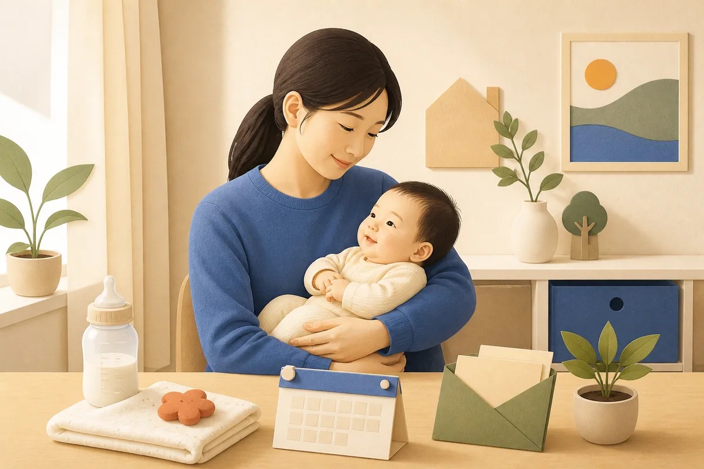

부모급여는 출산 뒤 초기 양육 부담을 덜기 위해 0세와 1세 아동을 지원하는 제도입니다. 출생신고 뒤 신청 시점과 지급 계좌를 확인해야 합니다. 어린이집 이용 가정은 보육료 바우처와 함께 처리되는 구조도 알아둘 필요가 있습니다.
이 글의 목차
지원 대상

나이·소득·거주 요건
부모급여는 0~23개월 아동을 대상으로 합니다. 대한민국 국적 아동이 주민등록번호를 부여받고 국내에 거주하는지를 확인합니다. 보호자 소득으로 선별하는 제도는 아니지만, 주민등록·보호자 관계·해외 체류는 지급에 영향을 줄 수 있습니다. 입양, 복수국적 등 특수한 사정이 있으면 신청 전 복지로 또는 주민센터에 필요한 확인서를 문의하세요.
지원 금액 및 혜택
가정양육 기준으로 0세는 월 100만 원, 1세는 월 50만 원이 안내됩니다. 실제 입금은 신청일과 행정 처리 일정에 따라 달라질 수 있습니다. 어린이집 이용 때에는 보육료 바우처가 먼저 적용되고 남는 금액이 있을 때 차액이 지급될 수 있습니다. 입소·퇴소 예정이 있으면 변경일과 이용 서비스를 주민센터에 알리세요.
신청 기간
부모급여는 상시 신청할 수 있습니다. 출생일을 포함해 60일 이내 신청하면 출생월부터 소급 적용 여부를 확인할 수 있습니다. 늦게 신청하면 신청월부터 지급될 수 있어 출생신고와 함께 준비하는 편이 좋습니다. 주소·보호자·계좌가 바뀌면 신청 화면이나 주민센터에 최신 정보를 반영하세요.
신청 방법
온라인 또는 방문 신청 방법
보호자는 복지로 또는 정부24에서 본인인증 후 신청할 수 있습니다. 아동 정보, 보호자 관계, 지급 계좌와 돌봄 서비스를 확인해 제출하세요. 방문 신청은 아동 주소지 읍면동 주민센터에서 합니다. 대리 신청에는 위임 관계 서류가 추가될 수 있고, 접수 뒤에는 문자나 신청내역에서 처리 상태를 확인합니다.
필요 서류
방문 신청에는 보호자 신분증과 지급 계좌 정보가 필요합니다. 가족관계·주민등록을 전산으로 확인할 수 없거나 대리 신청이면 가족관계증명, 위임장 등 추가 자료를 요청받을 수 있습니다. 온라인은 필수 입력값과 동의 절차를 정확히 작성하세요. 해외 출생·입양·보호자 변경은 주민센터에서 구비서류를 미리 확인해야 합니다.
신청 시 주의사항
보육료나 종일제 아이돌봄서비스를 함께 이용하면 지급 방식이 달라질 수 있습니다. 어린이집 입·퇴소 달에는 바우처 적용 여부를 확인하고, 계좌 변경은 즉시 신고하세요. 본문의 월 지원액은 기본 금액이며 개인 지급 결과를 확정하는 내용은 아닙니다. 주소·보호자·돌봄 이용 상태를 최신으로 유지하세요.
자주 묻는 질문
소득이 높아도 부모급여를 신청할 수 있나요?
부모급여는 별도의 소득 기준을 두는 선별 지원으로 안내되지 않습니다. 다만 아동 연령, 국적·주민등록, 거주 상태 등 기본 요건은 확인됩니다.
어린이집을 이용하면 부모급여가 중단되나요?
이용 사실만으로 단순 중단이라고 볼 수는 없습니다. 보육료 바우처가 적용되는 방식이므로 어린이집 이용과 부모급여의 처리 결과를 공식 안내에서 확인해야 합니다.
공식 신청처와 문의처
온라인 신청은 복지로와 정부24에서 할 수 있습니다. 방문 신청과 개별 서류 문의는 아동 주소지 읍면동 주민센터를 이용하고, 제도 일반 문의는 보건복지상담센터 129로 확인하세요.